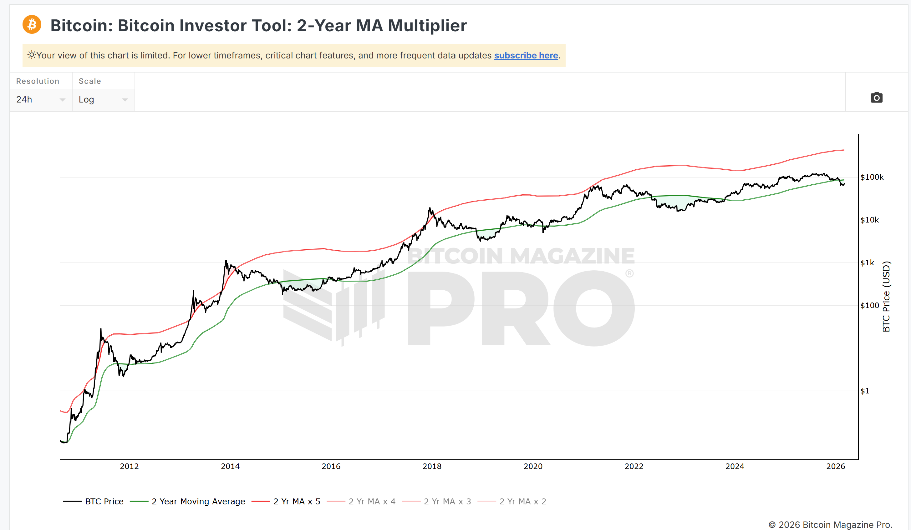
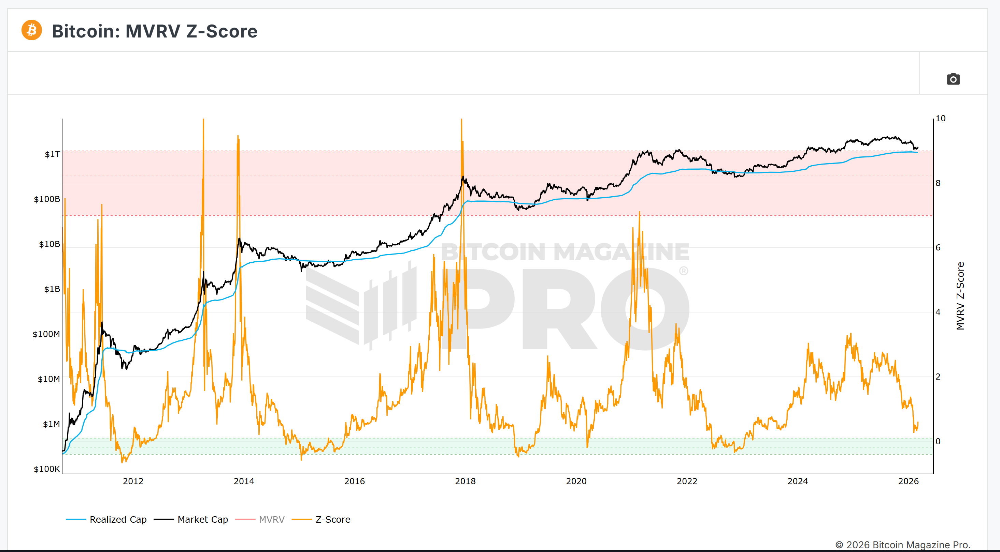
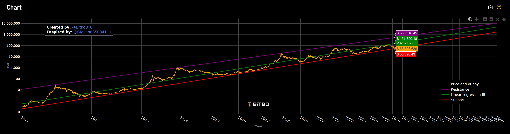
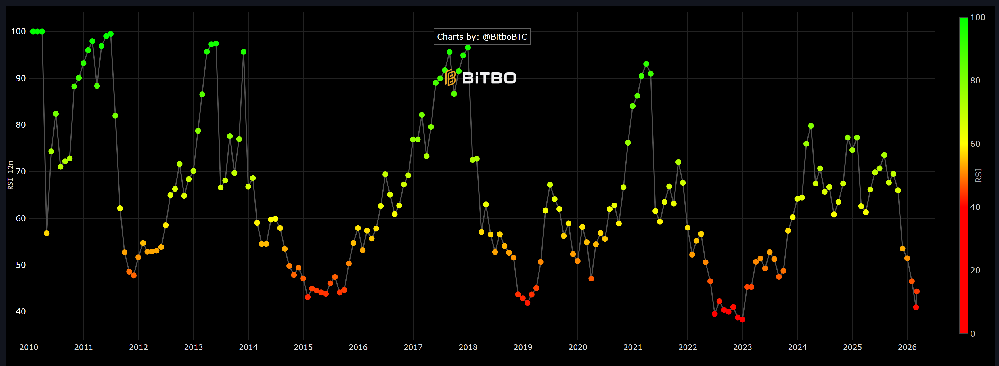
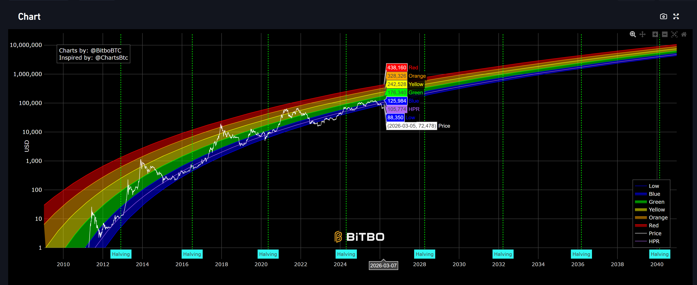

市場上對於比特幣是否已經見頂、牛市是否結束的爭論不休。然而，當我們拋開短線的價格雜訊，從最底層的宏觀鏈上數據與長線數學模型來看，答案卻異常清晰。本文將帶您一次看懂這五大重量級指標，見證歷史難得一見的數據共振。
1 Bitcoin Investor Tool 觸底綠線的歷史機遇
- 1Bitcoin Investor Tool觸底綠線的歷史機遇 的最關鍵觸發點與當前市場矛盾是什麼？
- 2該事態的傳導路徑、核心數據支撐與演化邏輯為何？
- 3底層假設是否存在死角？非對稱風險回報比的決策劇本是什麼？
「比特幣投資者工具」(2-Year MA Multiplier) 是一個判斷長期趨勢極值非常有效的指標。圖中的綠線代表「2年移動平均線 (2-Year MA)」，而紅線代表該均線的 5 倍放大。從歷史週期來看，當比特幣價格跌至或觸及綠線時，往往代表市場恐慌達到極致、賣壓枯竭，這也是長期投資者絕佳的「底部買入區間」。

想要更深入了解 2-Year MA 嗎？
查看知識百科中的完整專題解析，掌握均線乘數的週期奧秘。
2 MVRV Z-Score 距離泡沫狂熱仍有遙遠距離
- 1MVRV Z-Score距離泡沫狂熱仍有遙遠距離 的最關鍵觸發點與當前市場矛盾是什麼？
- 2該事態的傳導路徑、核心數據支撐與演化邏輯為何？
- 3底層假設是否存在死角？非對稱風險回報比的決策劇本是什麼？
除了均線指標，從未實現利潤角度來看的 MVRV Z-Score 也進一步印證了這個低點判斷。MVRV Z-Score 衡量的是比特幣市值（Market Cap）與已實現市值（Realized Cap）之間的標準差，用來判斷市場是否過熱。

根據最新的圖表顯示，Z-Score（橘線）目前正處於歷史相對底部的區域。這意味著市值相對於已實現市值的溢價極低，完全沒有達到過往牛市見頂時的極端瘋狂狀態，絕大多數的籌碼並未處於極端盈利狀態。
想要更深入了解 MVRV Z-Score 嗎？
查看知識百科中的完整專題解析，掌握市值回歸的精確座標。
3 Power Law 通道 緊貼紅色絕對支撐線
- 1Power Law 通道緊貼紅色絕對支撐線 的最關鍵觸發點與當前市場矛盾是什麼？
- 2該事態的傳導路徑、核心數據支撐與演化邏輯為何？
- 3底層假設是否存在死角？非對稱風險回報比的決策劇本是什麼？
我們透過最為宏觀的「冪律模型 (Power Law Corridor)」來檢視。這張圖表以對數座標畫出了比特幣長期的成長軌跡，並分為紅色的絕對支撐底線、綠色的均值回歸線，以及紫色的狂熱見頂阻力線。

根據 2026 年 3 月的最新讀數，紫色阻力頂部高達 53.8 萬美元，綠色均線落在 15.1 萬美元，而紅色的生死支撐線則位於 5.3 萬美元附近。當前的比特幣價格極度貼近底部的紅色支援線。
想要更深入了解冪律通道嗎？
查看知識百科中的完整專題解析，看懂比特幣的長線物理規律。
4 月線 RSI 動能指標 歷史級別的超賣冷卻區
- 1月線 RSI 動能指標歷史級別的超賣冷卻區 的最關鍵觸發點與當前市場矛盾是什麼？
- 2該事態的傳導路徑、核心數據支撐與演化邏輯為何？
- 3底層假設是否存在死角？非對稱風險回報比的決策劇本是什麼？
相對強弱指標 (RSI) 是判斷市場動能是否過熱或過冷的經典工具。從長線週期來看，當 RSI 呈現超賣低點時，往往代表市場情緒極度悲觀，但這也是勝率極高的底部佈局點。

根據最新的讀數顯示，當前 RSI 指標僅約為 43 左右，正處於歷史週期的「超賣冷卻區」。往往會隨之迎來下一波強勁的主升段爆發，這證明了當前的下行風險已經極度壓縮。
想要更深入了解月線 RSI 嗎？
查看知識百科中的完整專題解析，掌握動能指標的極致冷熱。
5 比特幣彩虹圖 價格落入「深藍色」極度低估區
- 1比特幣彩虹圖價格落入「深藍色」極度低估區 的最關鍵觸發點與當前市場矛盾是什麼？
- 2該事態的傳導路徑、核心數據支撐與演化邏輯為何？
- 3底層假設是否存在死角？非對稱風險回報比的決策劇本是什麼？
我們來檢視幣圈最為人熟知的長期對數成長曲線模型——「彩虹圖 (Rainbow Chart)」。這個模型透過色帶標示了價格相對於均線的偏離程度，由上而下分別為紅色的狂熱危險區，一路延伸到深藍色的極度低估區。

截至 2026 年 3 月，比特幣當前價格精準落在最底部的深藍色「Low / 抄底」區帶內。在彩虹圖的歷史軌跡中，只要價格碰觸到這條深藍色色帶，無一例外都是世代級別的最佳長期買點。
想要更深入了解彩虹圖嗎？
查看知識百科中的完整專題解析，視覺化掌握市場情緒階段。
綜合 2-Year MA 觸底、MVRV Z-Score 低點、Power Law 紅線支撐，再加上 RSI 超賣冷卻 與 彩虹圖深藍色極度低估區，這五大宏觀鏈上與數學模型產生了罕見且震撼的共振結論：
當前的比特幣不但沒有過熱，反而是極具爆發潛力的「絕對相對低點」。對於長線佈局者而言，這裡不是恐慌逃頂的時候，而是堅定定投、逢低建倉的最強時刻。
參考資料 (References)
Glassnode / Bitbo / Bitcoin Magazine
免責聲明 (Disclaimer)
本頁面資訊僅供教育與參考用途，不構成任何財務建議。加密貨幣投資屬高風險，請謹慎評估。